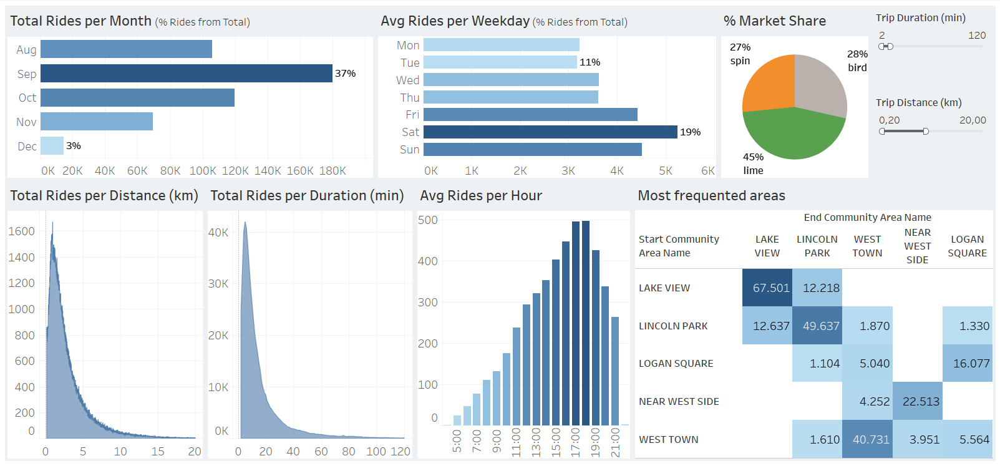
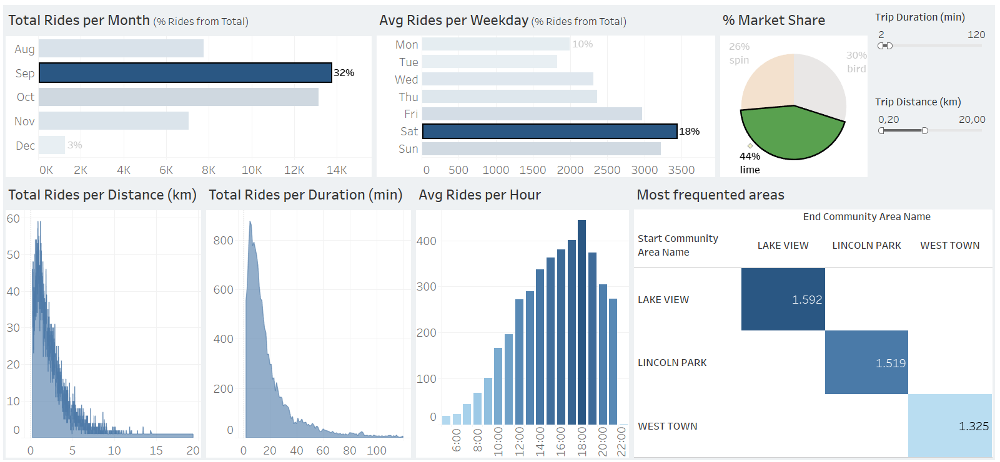

📊 Market Dashboard with Tableau
This project focuses on preparing and cleaning e-scooter market data using Excel, followed by the development of an executive-oriented dashboard in Tableau. The dashboard highlights key business insights and usage patterns.

🛠️ Data Preparation with Excel
1. Importing Data
The original dataset (available on Kaggle) was examined in Excel to understand its structure, identify unnecessary columns, and verify data types.
2. Data Cleaning
All cleaning steps were performed using Excel. Key steps included:
- Removing duplicates
- Standardizing data
- Date columns were split into separate date and time fields.
- Trip distance and duration were converted into kilometers and minutes (instead of meters and seconds).
- Dropping irrelevant columns/rows
The final cleaned dataset cannot be shared due to its large file size.
📈 Tableau Dashboard Development
1. Importing Cleaned Data
Cleaned data was imported into Tableau as .csv/.xlsx. Each column’s data type was validated, especially dates and times. Since Tableau requires a single field for time representation, a Calculated Field was created:
STR(DATEPART('hour',[Start Time]))
+ ':' +
RIGHT('00' + STR(DATEPART('minute',[Start Time])),2)
2. Creating New Calculated Fields
New Calculated Fields included: Weekday, Average Trips per Day, Average Trips per Weekday, and Percent of Total Rides.
Examples:
Weekday = DATENAME('weekday', [Start Date])
Average Trips per Day = COUNT([Trip ID]) / COUNTD(DATE([Start Date]))
3. Dashboard Design
The dashboard design followed executive reporting principles:
- Focus on key KPIs.
- Assessment of market and usage trends: monthly, weekly, and hourly rides, trip duration, trip distance, and trip origin/destination areas.
- Comparison of market share among service providers.
Visualizations used:
- Bar charts (monthly, daily, hourly usage)
- Distribution plots (distance and duration of rides)
- Pie charts (market share)
- Tables (origin vs. destination areas)
Interactive filters enhance usability — allowing users to adjust by trip duration, distance, provider, weekday, or month.

✅ Key Insights
- September shows the highest usage (37% of total), likely influenced by people returning to work/school after summer holidays. In contrast, colder months (November–December) show lower activity, indicating strong seasonality in scooter demand.
- Weekends outperform weekdays due to leisure time. Fleet deployment and battery charging should be maximized during weekends, while maintenance and battery swaps can be performed on weekday nights/mornings.
- Peak daily usage occurs from 16:00–20:00. Scooters should be fully charged and deployed before these hours.
- Trip profile: Most rides last < 20 minutes and cover < 5 km — confirming scooters are mainly used as last-mile transportation.
- Market share: Lime leads over Spin and Bird, holding a competitive advantage.
- Geographic usage: Lake View, Lincoln Park, and West Town account for most rides, suggesting these areas require higher fleet allocation.
Additional insights could be extracted if data on trip cost, revenue, profit, long-term trends (multi-year data), or user IDs were available. These would allow for profitability analysis, seasonal forecasting, and customer behavior tracking.